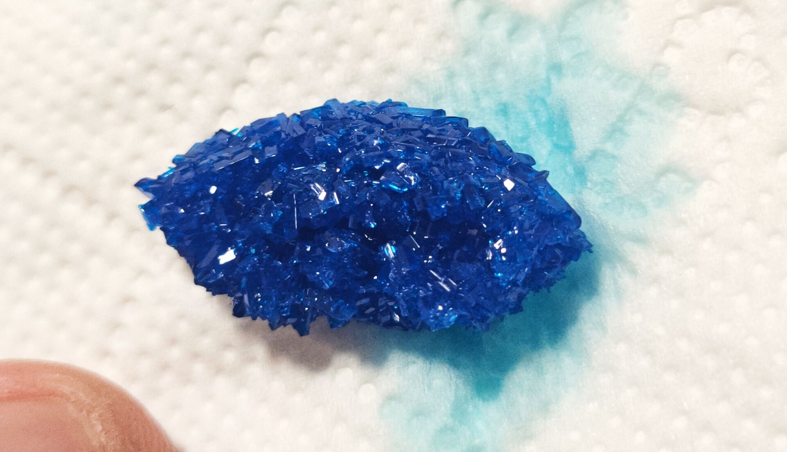

图源：CPSA
2,2'-联吡啶（bipy）是一个极其优秀的双齿螯合配体。对于铜(II)离子而言，由于其 d9 电子构型会产生强烈的姜-泰勒效应（Jahn-Teller Effect），使用普通单齿配体（如氨水）很难合成稳定的高配位错合物。但得益于联吡啶强大的配位与螯合能力，我们能轻松突破这一限制，制备出呈现蔚蓝色的大颗粒板状晶体：硝酸双(2,2'-联吡啶)合铜。
实验严格控制了金属与配体 1:2 的摩尔比例。若配体过量（如 1:3 比例），则会形成全配位的六配位八面体 [Cu(bipy)3]2+ 络合物。
完全一样。文内提供的方法直接借鉴了氯化铜体系。若使用 CuCl2，按照相同的 1:2 比例操作，将得到六水合二氯双(2,2'-联吡啶)合铜，其内外界结构类似（[Cu(bipy)2Cl]Cl），同样为蔚蓝色鳞片状。
是的，2,2'-联吡啶在水中的溶解度很小，所以实验中我们必须用无水乙醇将其溶解，然后再与含水金属盐溶液混合。这也是为什么重结晶时需要平衡水和乙醇比例的原因。